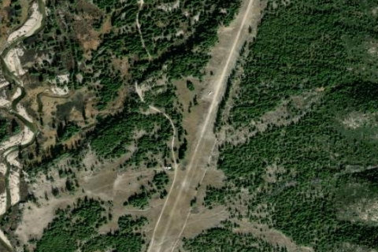

GRAHAM USFS
U45 · ID

Aerial imagery source: Esri, Vantor, Earthstar Geographics, and the GIS User Community
| Identifier | U45 |
|---|---|
| State | ID |
| Runway length | 2,900 ft |
| Runway width | 50 ft |
| Surface | TURF |
| Runway | 18/36 |
| Elevation | 5,726 ft |
| Ownership | public |
| CTAF | 122.9 |
| Coordinates | 43.95517833, -115.27259111 |
Notes
[idaho_itd] USFS Airfield [shortfield] Graham sits on the edge of the Sawtooth Wilderness area, alongside the North Fork of the Boise River, deep within the Boise National Forest. It lies roughly 53 miles northeast of Idaho City and about 90 miles from Boise, accessible via Idaho Highway 21 and a series of Forest Service roads. The surrounding terrain is quintessential central Idaho backcountry — steep canyon walls, high-elevation ridges, and river bottom meadows. Several trails within a couple of miles of the strip offer opportunities for hiking, horseback riding, and fishing along Johnson Creek and the North Fork. Camping Located on the river, are three campsites with fire pits, tables, and pit toilets. Also, the Graham Bridge Campground is located upstream one half mile, and the Johnson Creek Campground (not the runway) is located downstream one mile. Operations & Warnings The airstrip is generally clear of snow from late May through early October, and pilots should use appropriate backcountry landing precautions throughout that window. The northern third of the strip has seen significant erosion — pilots have noted large rocks in the center and heavy wear at the very north end caused by aircraft applying full power from a standing start. Nose-wheel aircraft should exercise particular caution on the upper end of the runway. There are no fuel services, and help is a long way off, so come well-prepared. Bears are occasionally spotted in the area, and visitors should be aware of the general risk of hantavirus exposure common to remote backcountry cabins. History Graham was the site of an 1880s boom town, and the Forest Service Guard Station nearby is a remnant of that era. The massive Rabbit Creek Fire of 1994 swept through the area, destroying nearly everything in its path — including what remained of the historic Graham mining town on the west side of the river, the old mill, cabins, and tram towers. Remarkably, the Graham Guard Station cabin survived. Vegetation has been slowly returning to the area in the decades since, gradually restoring some of the lush character the valley once held before the fire.